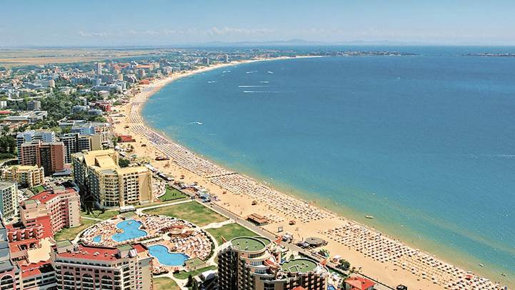
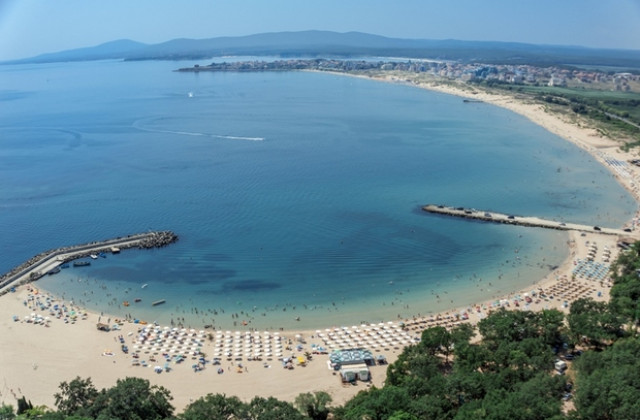
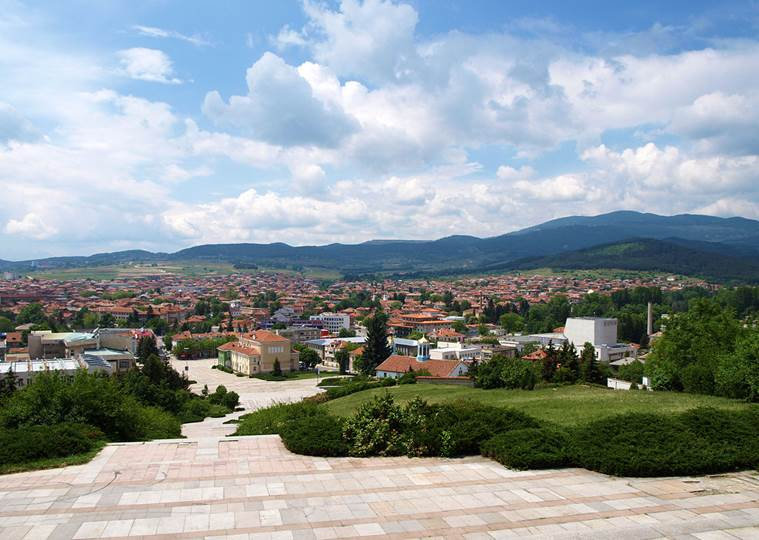
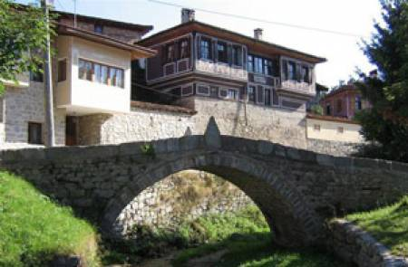
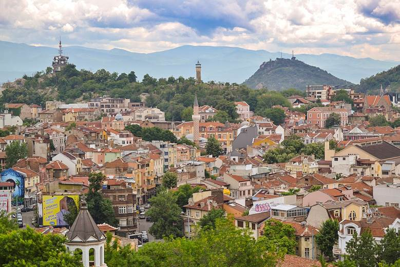
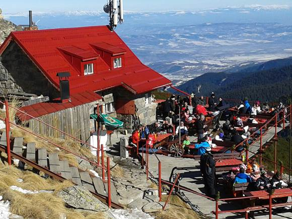
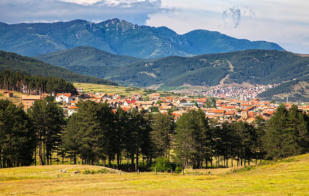
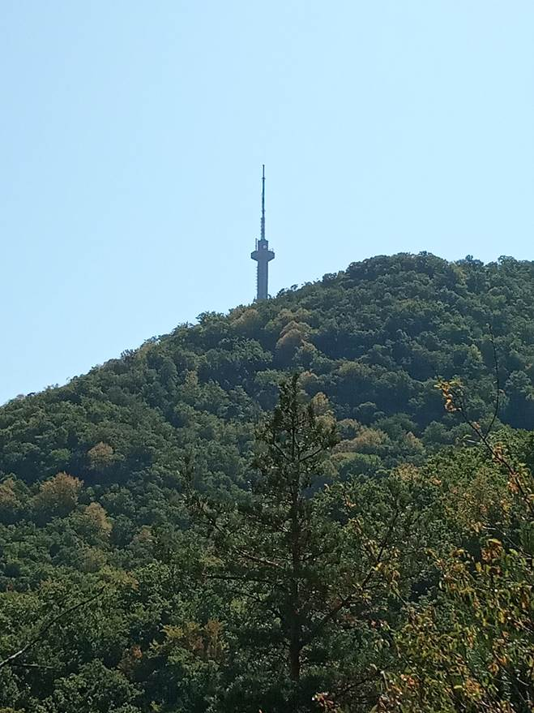

Летни предложения
През лятото е време за море...но не само! Лятото е едно прекрано време за разходка до всяка дестинация в България, планина, море, градове села!
Морски предложения
|  |  |
| Не Ви се ходи на море за дълго? Предлагаме Ви двудневна екскурзия до един от най-известните бълграски летни курорти - Слънчев бряг. В цената влиза нощуване в хотел както и четири яденета! Всичко това за 50 лева на човек! код на дестинацията: M0rekskurz1q |
Нашата компания Ви предлага тридневно морско пътешествие, обикаляйки българското крайбрежие с яхта! Яхтата разполага със собствено стаи, в цената влиза и 3 пъти ядене на ден! Всичко това за 150 лева на човек! код на дестинацията: M0reqht@ |
Други летни предложения
|  |  |  |
 |
| Панагюрище - славен град. Предлагаме Ви екскурзия до този прекрасен град, с възможност да посетите музея на Райна Попгеоргиева, както и много други обекти! Всичко това за 20 лева на човек! код на дестинацията: P@n@gur16te |
Друг възрожденски град - това е Копривщица. Нашият екскурзовод ще ви запознае с обекти в града като моста първата пушка. Също така ще имате възможността да се запoзнаете със баба Стойка и тъкането на килими и черги! Всичко това за 20 лева на човек! код на дестинацията: K0priv6tic@ |
Град Правец - известен с производството на електронно-изчислителна техникa е един също така прекрасен град. Имайки възможнсотта да посетите музея в Правец, вие ще се запознаете със българското произвдоство! Всичко това за 15 лева на човек! код на дестинацията: Pr@vec |
Пловидв е един старинен град, съхранил се през вековете. Тази екскурзия ще ви даде възможността да разгледате Пловдив както в съвременния му вариант, така и стария град! Всичко това за 20 лева на човек! код на дестинацията: Pl0vd1f |
|  |  |  | Витоша е една прекрасна планина, достъпна до софиянци. Ние ще организираме поход, така че да се насладите на тази прекрасна планина! Ще тръгнем от княжево като ще минем през Копитото, златните мостове, хижа Момина скала, където ще се състои един солиден обяд в ресторанта, Платото, Черни връх, хижа Алеко, след което предстои пренощуване в хотел Морени. Похода продължава на следващия ден, минавайки през Камен дел, витошко лале и заслона бай кръстьо. Всичко това за 50 лева на човек! код на дестинацията: V1t06@ |
| Искате разходка до най високия връх на Балканския полуостров? Предлагаме ви поход до Мусала! Похода тръгва от Боровец, последната почивка е на Ястребец! Всичко това за 30 лева на човек! код на дестинацията: Mus@l@ |
Един летен ден, в банята?! Предлагаме ви екскурзия до Велинград, където да се насладите на балнеолечебните свойства на водата, напълно безплатно! Всичко това за 30 лева на човек! код на дестинацията: Vel1ngr@d |
България е едно прекрасно място! Насладете се на красотата и обичаите и, на супер достъпните цени при нас! Ние сме вашият шанс да разгледате родината си!
BGTur - Вашият шанс да обиколите България